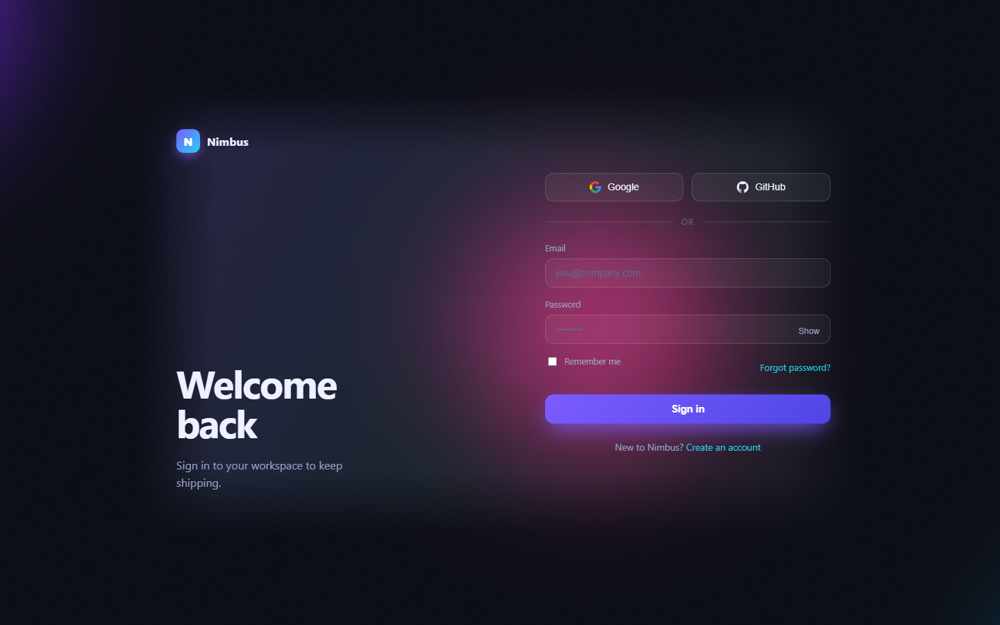
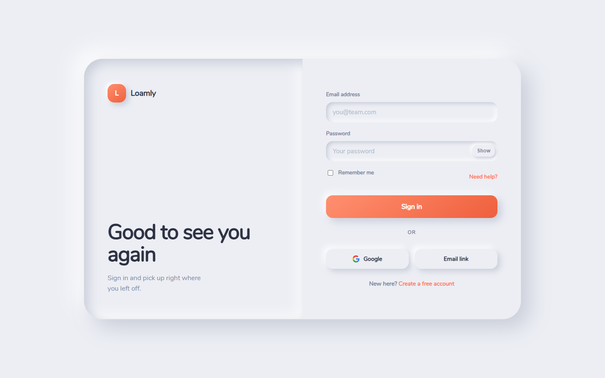
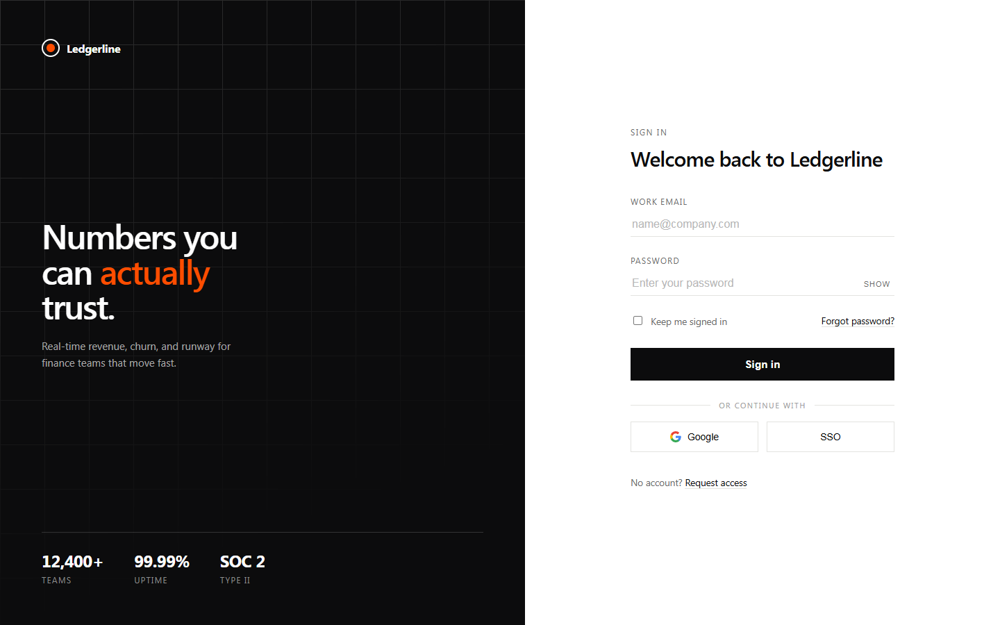
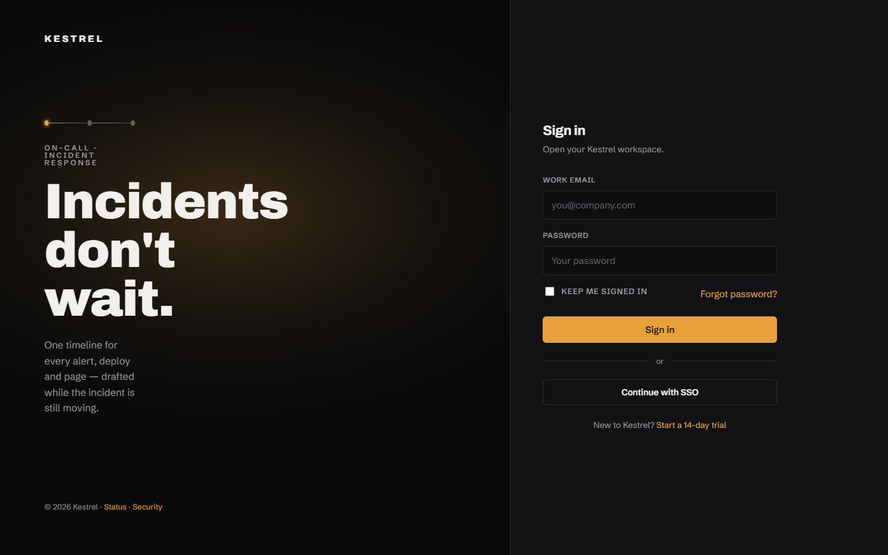
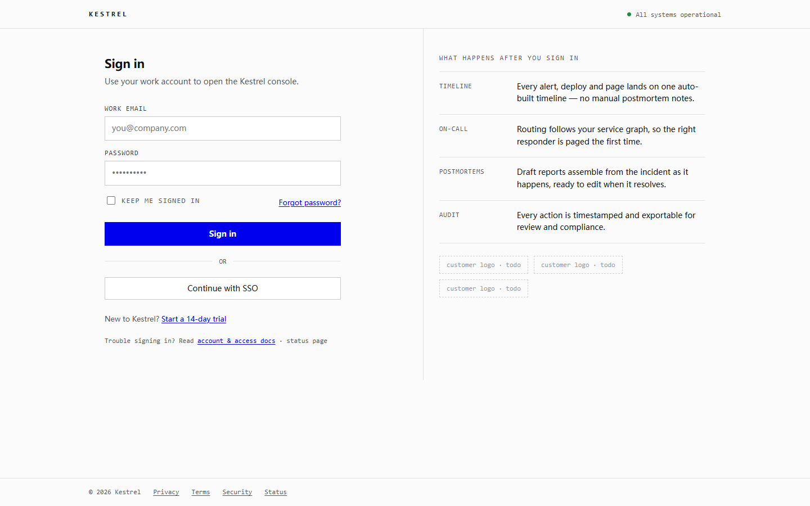
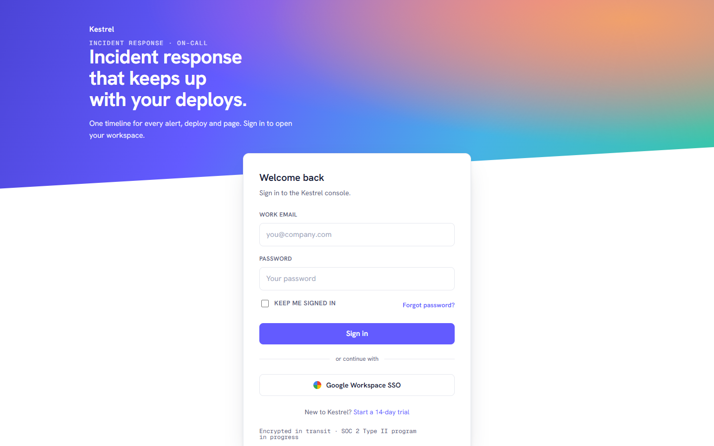

 极光玻璃 aurora-glass 紫青光晕在近黑底上缓慢漂移，内容坐在一块羽化融入的玻璃板上。 暗色玻璃拟态SaaS 来源：无 skill baseline 预览风格定义tokens
 软陶新拟态 soft-clay 同色材质被推起或压凹，暖橘只出现在三处——留白靠构图撑开。 浅色新拟态移动优先 来源：无 skill baseline 预览风格定义tokens
 瑞士编辑 swiss-editorial 黑白纸面 + 强网格 + 单点信号橙。自带 900px 断点，移动端隐藏叙事栏。 黑白编辑排版金融数据 来源：无 skill baseline 预览风格定义tokens
 电影暗场 cinematic-dark 近黑舞台 + 单一暖琥珀光源 + 超大字重。对抗冷蓝霓虹 slop 的答案。 暗色戏剧打光发布页 来源：huashu-design 逻辑 C（最佳设计师） 预览风格定义tokens
 功能主义粗野 functional-brutalism 纸白文档网格 + 系统字体 + 发丝线。页面读起来像规格表，不像营销材料。 浅色文档网格开发者工具 来源：huashu-design 逻辑 A（秒数轮盘 #17） 预览风格定义tokens
 干净工具风 stripe-referenced 白底 + 靛蓝 + 斜切彩色横幅。渐变被框在 band 里，这是 craft 与 slop 的分界。 浅色SaaS标杆迁移 来源：huashu-design 逻辑 B（现实参照） 预览风格定义tokens